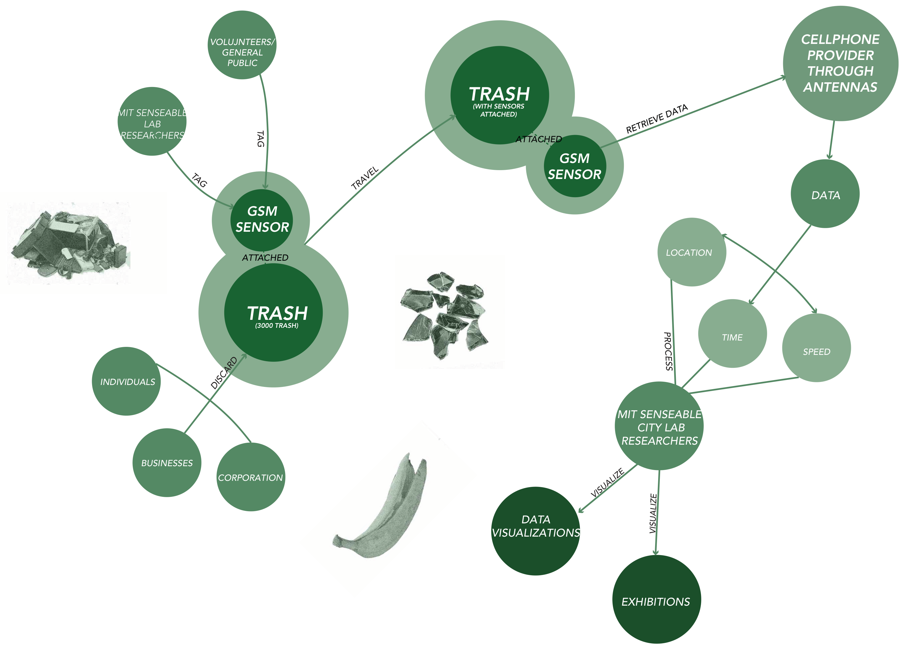
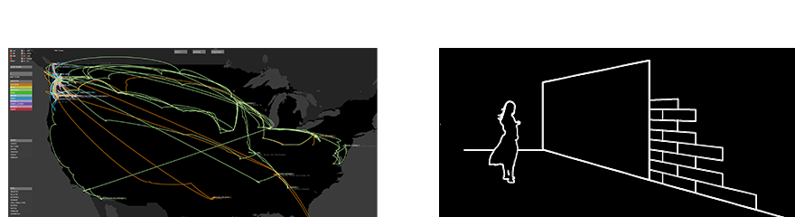

Project Team
Leadership
- Carlo Ratti — Director
- Assaf Biderman — Associate Director [1]
Team Leaders
- Dietmar Offenhuber — Team Leader
- Eugenio Morello — Team Leader, Concept
- Musstanser Tinauli — Team Leader, First Phase
- Kristian Kloeckl — Team Leader, Second Phase [1, 2]
Engineering & Programming
- Lewis Girod — Engineering
- David Lee — Programming [1]
Videography
- Armin Linke — Video [1]
Advisors
- Rex Britter
- Tim Gutowski
- Stephen Miles [1]
Special Thanks
- Jodee Fenton
- Tim Pritchard
Team Members
- Alan Anderson
- Clio Andris
- Avid Boustani
- Carnaven Chiu
- Chris Chung
- Lorenzo Davolli
- Kathryn Dineen
- Jennifer Dunnam
- Natalia Duque Ciceri
- Samantha Earl
- E Roon Kang
- Sarabjit Kaur
- Eugene Lee
- Kevin Nattinger
- Sarah Neilson
- Giovanni de Niederhausern
- Jill Passano
- Elizabeth Ramaccia
- Renato Rinaldi
- Francisca Rojas
- Louis Sirota
- Angela Wang
- Malima Wolf [1, 2]
Lead Volunteers
- Lance Albertson
- Richard Auger
- Michael Cafferty
- Shannon Cheng
- Jon Dreher
- Jodee Fenton
- Shalini Ghandi
- Chad Johansen
- Tim Pritchard
- Christie Rodgers
- Andy Smith [1]
Project Partners
- Waste Management — Claudia Hertzog · CHertzog@wm.com
- Qualcomm — Daniel Obodovski · danielo@qualcomm.com
- Sprint — Brian LaBree · Brian.LaBree@sprint.com
- Mark Shepard — mshepard@andinc.org [1]
Supported By
- City of Seattle
- Office of Arts and Cultural Affairs
- Seattle Public Utilities
- The Seattle Public Library
Relational Diagram

Methodology
The first part of the project is its technical methodology. MIT Senseable City Lab developed electronic tracking tags equipped with sensors to follow individual pieces of trash. The first generation of tags used cellular technology and CellID triangulation, estimating a tag's location by measuring signals from nearby cell towers. Although less accurate than GPS, this method worked well because it could still detect signals inside buildings and buried within piles of waste. Later versions combined with CDMA cell-tower trilateration, providing both greater accuracy and reliability while making it possible to track waste over much longer distances and, eventually, across international borders.
To make long-term tracking possible, the researchers also developed low-power algorithms that allowed the tags to spend most of their time in hibernation, waking only every few hours or whenever movement was detected. Motion and orientation sensors adjusted how frequently the tags recorded their location, extending battery life while still capturing important changes in a trash item's journey. The tags themselves were also designed to meet environmental standards, ensuring they could safely enter existing waste streams.
Alongside its technical approach, the project also relied on a human-centered methodology. Rather than collecting data from large institutions alone, Trash Track used an open, crowdsourced model by working with volunteers from the Seattle Public Library and the general public. This bottom-up approach allowed the researchers to gather waste from different neighborhoods, households, and everyday routines, creating a more diverse picture of Seattle's waste system. By focusing on ordinary objects and involving the public directly, the project emphasized transparency and showed how individual actions connect to larger urban infrastructures.
Contextual Analysis
The Trash Track project emerged during a period of growing concern about sustainability and waste management in the late 2000s. In 2008, New York City launched the Green NYC Initiative (PlaNYC), a sustainability plan that aimed to increase recycling rates and reduce greenhouse gas emissions. This initiative inspired the team at the MIT SENSEable City Lab to explore how sensors and mobile technologies could change the way cities are understood and managed. They were driven by a simple but powerful question: “Why do we know so much about the supply chain, and so little about the removal chain?”
Trash Track was developed in response to rising levels of municipal waste, declining recycling rates, and the growing problem of electronic waste, which became a major environmental concern in the early 2000s. E-waste contains toxic materials such as lead, mercury, and cadmium that often end up in landfills, creating long-term environmental impacts. Interestingly, the data for the project was collected in the greater Seattle area in 2009. Although Seattle was still emerging as Silicon Valley of the Pacific Northwest, the decade saw the city become one of the nation's largest technology hubs. It is interesting that a conversation about e-waste and recycling began in a city whose rapid technological growth would also contribute to the increasing production of electronic waste. By attaching tracking sensors to everyday objects, the project made the otherwise invisible journey of waste visible, revealing how discarded items moved through cities and where they ultimately ended up. The launch of Trash Track in 2009 became one of the first large-scale applications of active location tracking technology for municipal solid waste.
Rather than simply documenting waste, Trash Track questioned how people understand their relationship with the things they throw away. It was designed for both policymakers and the general public, encouraging a bottom-up approach to resource management by using technology to influence behavior and improve environmental awareness. The project emphasized that the things we throw away do not simply disappear. Instead, they travel through complex waste networks and leave environmental footprints along the way. It also highlighted the technological footprint of e-waste, connecting waste management to broader conversations about technology, consumption, and sustainability.
Context Timeline
Experts Kreith and Tchobanoglous argue there's a lack of empirical data in the waste management sector.
Seattle's City Mayor mandates commercial recycling.
Washington enacts the Electronic Product Recycling Law, making manufacturers responsible for financing the recycling of their products at end of life.
254 million tons of municipal trash generated nationally — three times as much as 50 years earlier.
Seattle City Council passes the Zero Waste Resolution to recycle and compost all landfill waste.
NYC's Green NYC Initiative inspires the Trash Track project; Washington's E-Waste Recycling Law takes effect, funding free e-waste recycling.
Trash Track launches
Results are presented through immersive exhibitions in multiple cities, sparking discussions on sustainable public policy.
Rhetorical Analysis
In the 1970s, waste was mostly managed locally, with most cities operating their own landfills. As cities expanded, however, trash began moving farther away to the outskirts. While cities became more centralized, waste became increasingly decentralized and invisible. The farther trash travels, the less people understand where it actually ends up.
This lack of transparency has only grown as waste production has increased. Kreith and Tchobanoglous (2022) argue that there is a lack of clear standards and enforcement for tracking waste transportation and data. This not only increases disposal and transportation costs but also creates significant environmental impacts. In the Trash Track project, one tagged object traveled nearly 3,000 miles before reaching its final destination. This becomes especially concerning with hazardous and electronic waste, which often travels the longest distances. Many landfills are also located in low-income and marginalized communities, exposing these communities to disproportionate environmental risks.
Trash Track responds to these issues by revealing the hidden journeys of waste. By making waste visible, the project exposes inefficiencies in transportation and waste management systems while encouraging people to rethink their relationship with consumption and disposal. Ultimately, it aims to optimize waste management and inspire behavioral change by showing that trash is deeply connected to people, cities, and the infrastructure that supports them. In a city like Seattle, a major metropolitan hub, waste quickly disappears from public view, making it easy to ignore where it goes and who is affected by it.
Visual and Aesthetic Representation

One of the main outputs of the Trash Track project is its visual representation through mapping. The maps are drawn very intentionally, highlighting only the movement and journey of the tracked trash instead of detailed geographic information. Different types of waste are represented in bright colors against a dark, almost black-and-white background. This contrast emphasizes that trash, which we often think disappears once it is thrown away, actually continues to travel far beyond what we expect. By simplifying the map and focusing only on the paths of the waste, the project makes these otherwise invisible systems visible to the public.
Beyond digital maps, Trash Track also communicates its findings through public exhibitions. Originally developed in Seattle, the project has since been exhibited in other metropolitan cities such as New York, London, and Taiwan, allowing its message to reach audiences in different urban contexts. The exhibition format reinforces the project's goal of making invisible infrastructure visible by transforming scientific data into an engaging public experience. Rather than presenting statistics alone, visitors are immersed in visual narratives that reveal how waste moves through cities and across regions.
Overall, the project's visual language is central to its argument. The bold colors, minimal backgrounds, and emphasis on movement encourage viewers to reconsider what happens after they throw something away. Instead of portraying waste as the end of a product's life, the visualizations reveal it as the beginning of another journey. This representational approach not only raises public awareness about recycling and waste management but also encourages conversations around more sustainable policies and individual responsibility.
Trash Track within Author's Practice
Carlo Ratti is an architect, engineer, and urban scholar whose work focuses on understanding urban systems through intelligent technologies and the convergence between the natural and artificial worlds. At the center of his practice is the idea of creating an "architecture that senses and responds." His research explores how digital technologies can help us better understand cities, making him one of the leading voices in discussions around smart cities and responsive urban design.
Although his work is highly technological, Ratti argues that his philosophy is deeply human-centered. He often describes his approach as bottom-up, placing people at the center of the design process. In Trash Track, for example, the project depends on crowdsourcing and public participation, using volunteers to reveal everyday behaviors and people's relationship with waste. This same approach appears in other projects, such as Space of Ideas, where research is driven by open participation and grassroots collaboration rather than top-down planning.
In his 2023 Noema article, "The Endless Possibilities of Open-Source Urban Design," Ratti argues that urban design should be an iterative process that is "sensitive to the needs of people and nature." He believes that complex urban systems require broad public participation and that designers should move away from searching for an "optimal design." Instead, projects should remain open-ended, allowing them to evolve over time rather than striving for a single perfect solution.
Assaf Biderman, a collaborator at the MIT Senseable City Lab and founder of Superpedestrian, shares a similar human-centered approach to urban technology. His work focuses on partnering with governments and industry to explore how embedded technologies, AI, big data, and robotics can improve urban livability and sustainability. Through projects such as Superpedestrian's vehicle intelligence systems, Biderman extends this research into safer and more responsive transportation, using technology to improve everyday life rather than treating it as an end in itself.
This approach also shaped the work of Dietmar Offenhuber, another collaborator on Trash Track. Offenhuber's research centers on public policy, infrastructure, and waste systems. In his 2017 book Waste Is Information, published nearly a decade after Trash Track, he expands the research beyond Seattle to cities such as São Paulo and Boston. Offenhuber argues that waste flows reveal how cities truly function, showing that infrastructure is governed through the ongoing negotiation between people, technology, and the city. Across the work of Ratti, Biderman, and Offenhuber, intelligent systems are consistently used not as an end in themselves, but as tools for understanding human behavior and making urban systems more transparent.
Personal Assessment
One criticism of Trash Track is that it leans toward technological solutionism. While the project successfully made invisible waste systems visible, it also raises questions about surveillance and privacy. During the time it was created, tracking waste was an innovative way to understand human behavior and waste management systems. However, today these conversations are much more complicated, especially around surveillance, data collection, and corporate responsibility for electronic waste. A decade later, Ratti's book Waste Is Information expands on these ideas, arguing that waste itself can become a valuable source of information for understanding cities.
At the same time, trash and waste are incredibly complex systems, and technology alone cannot solve them. I appreciate Ratti's human-centered approach, especially the use of crowdsourcing and public participation rather than simply focusing on optimization. However, the project also simplifies a much larger issue. Although around 3,000 objects were tagged, only about 1,100 were successfully tracked to the end, showing the limitations of relying on technology to represent an entire waste system. There are also privacy concerns, since trash often contains personal information, and many people may not be comfortable having their waste tracked.
What I find most valuable about the project is not that it solves the waste problem, but that it exposes hidden infrastructures. It revealed that many waste items, especially electronic waste, travel thousands of miles and often end up in remote or marginalized communities, exposing major gaps in our recycling and disposal systems. Nearly two decades later, these problems still exist. Waste continues to be exported to lower-income regions, showing that the issue is ultimately systemic. Rather than only improving how we dispose of waste, I think we should also rethink how products are designed and manufactured so they are not intended to be thrown away in the first place. In that sense, Trash Track is an important starting point for making waste visible, but it is only one piece of a much larger conversation.